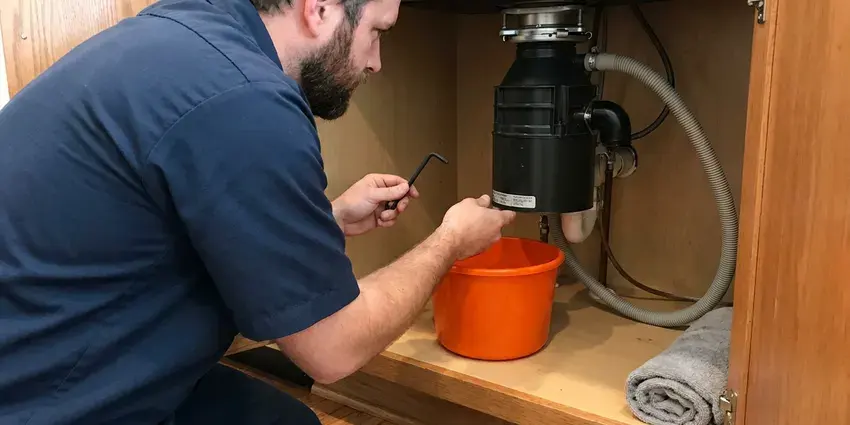
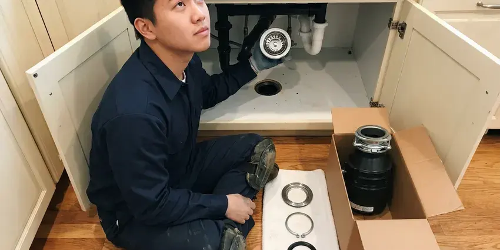
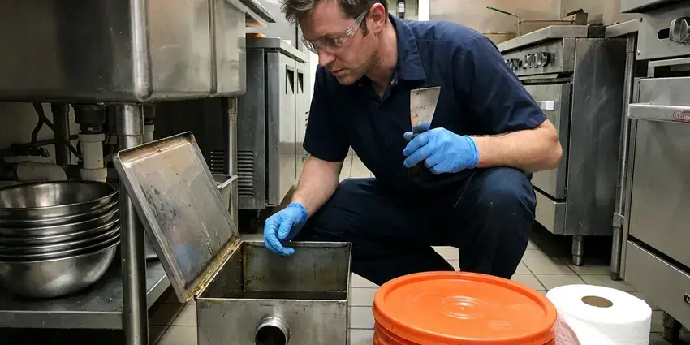

Kitchen Sink Installation in Sitka, AK
Remodeling your kitchen or upgrading an old basin? We install kitchen sinks of every style in Sitka, AK with tight drains and sturdy support.
- Experienced Plumbers
- Licensed, insured plumbers
- Fast, reliable service
- Quality workmanship

Ready for a New Kitchen Sink Installation in Sitka, AK?
Call with your sink model and we'll give you a clear installed price.
Your Go-To for Kitchen Sink Installation in Sitka, AK
CKN Plumbing specializes in kitchen sink installation, ensuring your new fixture is plumbed correctly and functions perfectly from day one. We handle everything from basic stainless steel models to complex farmhouse sinks, always following local plumbing codes here in Alaska.
Our expertise includes:
- Install undermount, farmhouse, drop-in and workstation sinks
- Professional installation of all sink types.
- Careful connection of water lines and drains.

Additional Kitchen Plumbing Services in Sitka, AK
Our kitchen plumbing services in Sitka, AK cover sinks, disposals, dishwashers, and grease traps so your kitchen stays clean, safe, and fully functional.


Garbage Disposal Repair near Sitka

Garbage Disposal Installation near Sitka



Professional grease trap cleaning, Sitka

Customers
Why Choose CKN Plumbing for Kitchen Sink Installation in Sitka, AK?
A kitchen sink that is not properly supported or plumbed can sag, leak or drain slowly. We install every sink to the manufacturer's specs and test it under load.
- Fast Service, We work efficiently to minimize disruption, getting your new kitchen sink installed and ready for use quickly.
- Quality Materials, We use only quality sealants, pipes, and connectors to deliver a long-lasting and leak-proof kitchen sink installation.
- Full Hookups, Faucet, disposal, dishwasher and filter lines can be installed in a single visit.
Citywide Coverage
CKN Plumbing is proud to serve every neighborhood in Sitka for kitchen sink installation needs. From older neighborhoods to the newest developments, our trucks are always ready to bring professional plumbing services right to your doorstep.
Experienced Team
Our plumbing team has broad experience specifically with kitchen sink installations, handling hundreds of different models and configurations. We understand the common challenges of connecting various faucet types, garbage disposals, and drain lines, delivering a proper setup every time.
Safety-First Approach
Safety and code compliance are top priorities for every kitchen sink installation we perform. We closely follow all local Alaska plumbing codes to make sure your new sink is installed safely and functions efficiently.
Trusted Certified Sitka Plumbing Services Professionals
At CKN Plumbing, we take pride in providing licensed, certified plumbing services throughout Sitka, AK. Backed by recognized industry credentials, our experienced plumbers combine technical skill with genuine customer care. Whether it is repair, installation, or maintenance, we follow strict safety and quality standards to deliver long-lasting results you can trust.
Call Us Now PHCC Plumbing Contractor Recognition
PHCC Plumbing Contractor Recognition Better Business Bureau (BBB) Accreditation
Better Business Bureau (BBB) Accreditation Angi Certified Pro
Angi Certified Pro ISO 9001 Quality Management Certification
ISO 9001 Quality Management CertificationReliable Kitchen Sink Installation Services in Sitka, AK
Stainless Steel Sink Installation in Sitka
Stainless steel sinks are a popular choice for their durability and ease of cleaning, especially in busy kitchens. We specialize in installing all gauges and styles of stainless steel sinks, ensuring proper support and watertight seals for years of use. Our team handles both top-mount and under-mount configurations, making sure your new sink fits cleanly with your countertops and cabinetry. We also connect all related plumbing, including faucets and garbage disposals.

Disposal and Dishwasher Hookup with Sink Installation in Sitka, AK
Most new kitchen sinks are paired with a disposal and dishwasher. We mount the disposal, connect the dishwasher drain through an air gap or high loop, and install the dishwasher supply. Doing it all at once saves you time and money. We test every connection under real use.
Workstation Sink Installation in Sitka, AK
Workstation sinks include ledges for cutting boards, colanders and drying racks. They are usually deep, single-bowl designs with offset drains. We position the drain to fit your cabinet and disposal and confirm the faucet reach. These sinks are popular in modern kitchen remodels.
Commercial Kitchen Sink Installation in Sitka, AK
Commercial kitchens in Sitka have unique demands, requiring heavy-duty sinks that can withstand constant use and meet strict health codes. CKN Plumbing offers professional installation of commercial kitchen sinks, including multi-compartment sinks, prep sinks, and handwash stations. We ensure all installations comply with local health regulations and provide robust plumbing connections for high-volume usage. Our service cuts downtime for your business, getting your new commercial sink operational quickly and reliably.
Composite Sink Installation in Sitka
Composite sinks, made from materials like granite or quartz composites, offer excellent durability and a wide range of colors to match your kitchen decor. Installing these sinks requires careful handling to prevent damage and ensure a perfect fit. Our plumbers in Sitka are experienced with composite sink installation, using appropriate tools and techniques for secure mounting and sealing. We ensure all drain and faucet connections are tight and leak-free, providing you with a long-lasting and attractive kitchen fixture.
Kitchen Sink Installation Cost Factors in Sitka, AK
A drop-in sink swap costs less than an undermount on stone or a farmhouse sink with cabinet reinforcement. Adding a disposal, moving the drain or replacing old galvanized stubs adds time. We price the plumbing clearly and separately from the countertop. You know the full cost before we start.
Under-mount Sink Installation in Sitka, AK
Under-mount sinks provide a sleek, seamless look, making countertop cleaning easier. Their installation is more complex than top-mount sinks, requiring precise measurements and strong adhesive or clips for secure attachment to the underside of the counter. CKN Plumbing is skilled at under-mount sink installation, ensuring a strong bond and a fully sealed edge to prevent water infiltration. We confirm the cutout is smooth and the sink is level for proper drainage.

Sink & Garbage Disposal Integration in Sitka, AK
When installing a new kitchen sink, it's often the ideal time to upgrade or install a new garbage disposal. CKN Plumbing expertly integrates new garbage disposals, including InSinkErator and Moen models, with your new sink. We make sure all electrical and plumbing connections are safe and secure, providing a fully functional waste system for your Sitka, AK kitchen.
Kitchen Sink Installation Near Me in Sitka, AK
Our plumbers are familiar with the common plumbing challenges and building styles found across Sitka, AK. We pride ourselves on providing dependable, high-quality kitchen sink installations right where you need them, backed by our commitment to customer satisfaction.
When your countertops are going in, you need a plumber who shows up on schedule. We work in Sitka every week and can coordinate with your fabricator. That keeps your kitchen project on track.
CKN Plumbing at a Glance
- Licensed and insured plumbers serving Sitka, AK
- 24/7 emergency service with same-day scheduling
- Upfront, flat-rate pricing before work begins
- 4.9-star rated by 309+ Alaska customers
Sitka Map
Sitka Information
- Population
- 8,282
- Area codes
- Local
- Service area
- Sitka and communities within 40 miles
- Nearby
- Juneau, Ketchikan, Anchorage, Palmer
Homeowners on well water around Sitka should test regularly, since water chemistry can shift and affect pipes and fixtures. A professional kitchen sink installation is the right time to replace aging valves and drain stubs in Sitka, AK kitchens.
Expert Services
Trust our professionals for reliable CKN Plumbing solutions in Sitka, AK.
Our Specialized Plumbing Services in Sitka, AK
At CKN Plumbing, we provide a complete range of plumbing services across Sitka, AK. From leak detection to full system installations, our team ensures fast, precise, and affordable service for both residential and commercial properties. Explore our core services below:


How Our Kitchen Sink Installation Process Works in Sitka, AK
From your initial call to the final inspection, CKN Plumbing handles every step of your new kitchen sink installation with care.
Request a Quote
Call (928) 470-9007 with your sink type and countertop schedule. We confirm the scope and provide a straightforward installed price.
Prepare the Space
We remove the old sink, inspect the drain and valves and reinforce the cabinet if needed. Old stubs and stops are replaced when needed.
Install and Test
We set the sink, connect drains, faucet, disposal and dishwasher and run water to test. Then we clean up and walk you through the work.
Frequently Asked Questions About Kitchen Sink Installation in Sitka
The cost of kitchen sink installation in Sitka usually ranges from $200 to $600 for labor, depending on the sink type, complexity of the installation, and any necessary modifications to existing plumbing. This does not include the cost of the sink itself, which can vary a lot.
Top-mount (drop-in) sinks sit on top of the counter, with a visible rim, and are usually easier to install. Under-mount sinks are installed beneath the counter, creating a seamless look, but require more complex sealing and support for a secure installation.
While DIY sink installation is possible, it is often best to hire a professional, especially for under-mount or farmhouse sinks. Improper installation can lead to leaks, water damage, and costly repairs down the line. Our plumbers ensure a correct, leak-free, and code-compliant setup.
While it's possible to attempt a DIY kitchen sink installation, it's generally not recommended unless you have significant plumbing experience. Improper installation can lead to leaks, water damage, and costly repairs later on. Professional installation supports code compliance and long-term reliability.
In most cases, replacing an existing kitchen sink with a similar type does not require a permit in Sitka. However, if you are relocating the sink, altering major drain lines, or making significant changes to the plumbing system, a permit may be necessary. We can advise you on local code requirements.
CKN Plumbing can install all common types of kitchen sinks, including stainless steel, cast iron, composite, fireclay, and copper. We handle various mounting styles like top-mount, under-mount, and farmhouse (apron-front) sinks, ensuring a professional fit for any material.
When choosing a new kitchen sink, consider your kitchen's style, material durability, and whether you need features like multiple basins or a disposal. Also, think about water hardness in your area, as some materials might show mineral deposits more than others. Make sure the sink size is compatible with your cabinet and countertop.
Signs you might need a new kitchen sink include persistent leaks around the drain or edges, visible cracks or chips, severe staining that won't clean, rust spots, or a desire to upgrade your kitchen's look. If your current sink is old or damaged, replacement is often the smartest solution.
What People Are Saying About Our Plumbing Experts?

Daniel K.
A pipe burst at 11 pm and they actually answered. The plumber showed up within the hour, shut everything down, and had us back to normal the next morning. Could not ask for more.
Emergency Plumbing · Ketchikan, AK
Emily R.
I called CKN Plumbing for plumbing repair, and the technician was fast, polite, and thorough. They explained the problem clearly and fixed it the same day. I will definitely hire them again. Highly recommended!
Plumbing Repair · South Lakes, AK
Mark T.
When our office needed drain cleaning, CKN Plumbing provided quick, reliable service. The plumber arrived on time and made sure every drain flowed perfectly before leaving. Very satisfied.
Drain Cleaning · South Lakes, AK
Robert G.
The trenchless sewer replacement saved our front yard. They walked us through the camera inspection footage first so we knew exactly what we were paying for.
Sewer Line Replacement · Gateway, AKJames P.
Our commercial plumbing system had a leak under the sink, and CKN Plumbing handled it professionally. The plumbers arrived quickly and restored everything without disruption to our customers.
Commercial Plumbing · Sitka, AK
Laura S.
I scheduled a water heater replacement, and the team made the process smooth and affordable. The new unit works perfectly, and they cleaned up after completing the job.
Water Heater Replacement · South Lakes, AK